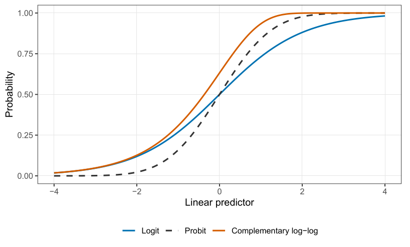

Introduction to generalised linear models
Part of Generalised linear models · 9 questions on this topic · What links here
Introduction to generalised linear models

| Part | Generalised linear models |
| Chapter | 1 of 6 in this part |
| Next | Standard errors, and models for counts |
| Questions | 9 (4 practice, 5 concept) |
| Definitions | Exponential family · Generalised linear model · Canonical link |
| Results | Mean and variance of an exponential family |
| Figures | 1 |
The usual first regression course rests on three habits: normality, linearity, and independence. Logistic regression has already appeared in the Bayesian part of this book, and it steps outside the first of those. The rest of this book relaxes all three. We begin with generalised linear models. Dependence, in time or within a cluster, comes later; a GLM still treats the responses as independent once the covariates are given.
The recommended reference for this material is McCullagh and Nelder, Generalized Linear Models (1989). It was the first book awarded the Karl Pearson Prize, in 2013, for a contribution to the practice of statistics.
What a regression statement is hiding
If someone says “let us fit a regression” and says nothing else, they usually mean Y_i\mid {\boldsymbol{X}}_i={\boldsymbol{X}}_i^\top\boldsymbol{\beta}+\varepsilon_i. \qquad(1) That one line is hiding four assumptions. We number independence as zero because people so rarely say it out loud.
- The responses are independent given the covariates.
- The conditional mean is linear in the covariates: \mathrm{E}(Y\mid {\boldsymbol{X}})={\boldsymbol{X}}^\top\boldsymbol{\beta}.
- The errors, and therefore the responses, have constant variance.
- The errors, and therefore the responses, are normal.
A transparent way to write the same model is Y_i\mid {\boldsymbol{X}}_i\stackrel{\mathrm{ind}}{\sim} \mathrm{N}({\boldsymbol{X}}_i^\top\boldsymbol{\beta},\sigma^2). \qquad(2) Independence is the \mathrm{ind}. Normality and the mean are inside the \mathrm{N}(\cdot). Constant variance is the single \sigma^2, not a \sigma_i^2. If you are uncomfortable with {\boldsymbol{X}}^\top\boldsymbol{\beta}, read it as \beta_0+\beta_1 x_1+\beta_2 x_2+\cdots.
Equation Equation 1 looks innocent, and it is not. Before we replace it, we will watch it fail on three data sets, with a different assumption failing each time.
Three examples the linear model does not fit
Runs in the past week
A hundred people at the gym were asked how many times they had run in the past week, and that count was plotted against age. The responses are integers, 0,1,2,\ldots, with plenty of ties. Jitter in a scatterplot is only there so that those ties do not sit on top of each other. A person cannot have run 1.37 times in a given week.
The mean is the first problem. A straight line through this cloud may not look absurd between the ages we actually saw. Extend it. By age 50 or 60 the line has crossed below zero, and a mean number of runs cannot be negative. Any function that is allowed to go to \pm\infty will do that for some covariate, whether or not that covariate appeared in the sample. A model has to stay valid for data we could have seen.
The repair is to put the straight line on the log of the mean, not on the mean: \mu=\exp({\boldsymbol{X}}^\top\boldsymbol{\beta}) \qquad\text{equivalently}\qquad {\boldsymbol{X}}^\top\boldsymbol{\beta}=\log\mu, \qquad(3) where \mu=\mathrm{E}(Y\mid {\boldsymbol{X}}). The exponential of anything real is positive, so the mean cannot cross zero. The transformation that takes the mean across to the linear predictor is the link. The map the other way, from {\boldsymbol{X}}^\top\boldsymbol{\beta} back to \mu, is the inverse link. We will often interpret on the mean scale. The literature names the link in the other direction, and we will follow the literature so that we can talk to it.
Do not take logarithms of the counts. Zero runs is a common and perfectly sensible observation, and \log 0 is not a number. Logging the observations is not what a generalised linear model does. The data stay on the original scale. Only the mean curve moves.
The distribution is the next problem. Integer counts with ties are not normal draws. A reasonable starting model is Y_i\mid {\boldsymbol{X}}_i\stackrel{\mathrm{ind}}{\sim} \mathrm{Poisson}\!\left(\mu_i=\exp({\boldsymbol{X}}_i^\top\boldsymbol{\beta})\right). There are other distributions for counts. The Poisson is the default, not the only choice.
The variance comes with that choice, and it is not constant. For a Poisson random variable the variance equals the mean, \mathrm{Var}(Y_i\mid {\boldsymbol{X}}_i)=\mu_i=\exp({\boldsymbol{X}}_i^\top\boldsymbol{\beta}). That is what the scatterplot is already saying. Near a mean of zero the counts pile up on 0 and 1, because they cannot go negative, so the spread is small. Where the mean is larger, the spread is larger. A Poisson model does not have to be told this. It is the variance formula.
Clotting times
McCullagh and Nelder discuss an experiment on the clotting time of blood. Normal plasma was diluted to nine percentage concentrations and clotting was induced by two lots of thromboplastin. The response is a time in seconds, somewhere from about twenty seconds up to two minutes. The doses on the horizontal axis already sit on a doubling scale: 5, 10, 20, 50, 100.
Log dose, rather than dose, is the covariate to use. A doctor who raises a dose by 5\,\mathrm{mg} is doubling a 5\,\mathrm{mg} prescription and barely touching a 100\,\mathrm{mg} one. What matters is the multiplicative change. Whether the logarithm is base 2 or base e only rescales the slope: a unit of \log_2 is a doubling, and a unit of \log_e is a factor of about 2.7. The scientific point is the same.
A straight line for the mean clotting time will eventually become negative, and a waiting time cannot. Two links keep the mean positive. The log link is Equation 3 again. The inverse, or hyperbolic, link is \mu=\frac{1}{{\boldsymbol{X}}^\top\boldsymbol{\beta}} \qquad\text{equivalently}\qquad {\boldsymbol{X}}^\top\boldsymbol{\beta}=\frac{1}{\mu}, \qquad(4) provided {\boldsymbol{X}}^\top\boldsymbol{\beta}>0. If the linear predictor is allowed to change sign, this expression goes negative and the model has broken.
The two links agree that a large dose of clotting agent can drive the mean time down towards zero. They disagree at the other end. As the linear predictor in Equation 4 approaches zero, the mean time goes to infinity. The log link, for any finite predictor, stays finite. So the modelling question is biological, not a default in the software. If there were truly no plasma, would the blood never clot, or would it clot after a long but finite time? Nobody in the experiment has zero plasma. A person with very little plasma does eventually clot, though a haemophiliac may bleed out first. That leans towards a finite mean, and so towards the log link. The inverse link is the honest model of the hypothetical with no plasma at all. Either is allowed. They can be paired later with whatever response distribution we choose. The link is not dictated by the distribution.
The times themselves are continuous and strictly positive, so they are not normal. A gamma distribution is a reasonable start: it is supported on (0,\infty) and it extends the exponential. A gamma law has a second parameter, a dispersion, which plays the role that \sigma^2 plays for the normal and can be chosen separately from the mean. In the shape-and-rate parameterisation used in this book, a \mathrm{Gamma}(\alpha,\alpha/\mu) random variable has mean \mu and variance \mu^2/\alpha. The model is the mean and the variance: Y_i\mid {\boldsymbol{X}}_i\stackrel{\mathrm{ind}}{\sim} \mathrm{Gamma}\!\left(\mu_i=\exp({\boldsymbol{X}}_i^\top\boldsymbol{\beta}),\ \mathrm{Var}=\phi\mu_i^2\right). Here \phi is the dispersion. The variance grows with the square of the mean, which is a stronger mean–variance relationship than the Poisson’s \mathrm{Var}=\mu. It is the same shape you see in the data: times near zero have little room to vary, and large mean times can vary a lot. If you prefer the book convention written out in full, this is shape 1/\phi and rate 1/(\phi\mu), because then the mean is \mu and the variance is \phi\mu^2.
Disease and cholesterol
A hundred patients have a cholesterol measurement and a binary disease indicator, with sex marked on the plot. Vertical jitter stops a pile of zeroes, or a pile of ones, looking like a fractional response. The response really is 0 or 1. As cholesterol increases, particularly once it is above about 6.5, disease becomes the typical outcome. Down near 4.5, absence is more common.
The mean of a binary response is the success probability, p=\mathrm{E}(Y\mid {\boldsymbol{X}})=\mathrm{P}(Y=1\mid {\boldsymbol{X}}). A straight line cannot represent it. The line will eventually leave (0,1), and a probability cannot. The exponential \exp({\boldsymbol{X}}^\top\boldsymbol{\beta}) stays positive, but it is not bounded by 1. Dividing by one plus itself fixes that: p=\frac{\exp({\boldsymbol{X}}^\top\boldsymbol{\beta})}{1+\exp({\boldsymbol{X}}^\top\boldsymbol{\beta})} \qquad\text{equivalently}\qquad {\boldsymbol{X}}^\top\boldsymbol{\beta}=\log\frac{p}{1-p}. \qquad(5) The right-hand equation is the logistic link, also called the logit: the log of the odds p/(1-p). The left-hand equation is the inverse link, sometimes called the expit. Log-odds run over the whole real line, which is what a linear predictor needs. The probability stays in (0,1).
Again, the link is applied to the mean. The logistic function of a zero or a one is not defined in any useful way, and any function of a binary observation still takes at most two values. You cannot manufacture a curve by transforming zeroes and ones.
The distribution is Bernoulli, a single coin toss, not a normal: Y_i\mid {\boldsymbol{X}}_i\stackrel{\mathrm{ind}}{\sim} \mathrm{Bernoulli}\!\left(p_i=\frac{\exp({\boldsymbol{X}}_i^\top\boldsymbol{\beta})}{1+\exp({\boldsymbol{X}}_i^\top\boldsymbol{\beta})}\right). The variance of a coin toss is p(1-p), so \mathrm{Var}(Y_i\mid {\boldsymbol{X}}_i)=p_i(1-p_i)=\frac{\exp({\boldsymbol{X}}_i^\top\boldsymbol{\beta})}{\bigl(1+\exp({\boldsymbol{X}}_i^\top\boldsymbol{\beta})\bigr)^2}. This variance is not monotone in p. It is largest at p=1/2 and it shrinks towards 0 as p approaches 0 or 1. If almost everyone is diseased, there is little disagreement left in the sample. The same is true if almost nobody is.
In all three examples the mean is a function of a linear predictor, and the observations are not transformed. The link is chosen so that the mean stays inside the set of values the response can actually have. The distribution is chosen to match the kind of observation: counts, positive times, or zeroes and ones. The variance formula is then a consequence, not a separate constant \sigma^2.
Put the four models next to each other: \begin{align*} Y_i\mid {\boldsymbol{X}}_i &\stackrel{\mathrm{ind}}{\sim} \mathrm{N}({\boldsymbol{X}}_i^\top\boldsymbol{\beta},\sigma^2),\\ Y_i\mid {\boldsymbol{X}}_i &\stackrel{\mathrm{ind}}{\sim} \mathrm{Poisson}\!\left(\exp({\boldsymbol{X}}_i^\top\boldsymbol{\beta})\right),\\ Y_i\mid {\boldsymbol{X}}_i &\stackrel{\mathrm{ind}}{\sim} \mathrm{Gamma}\!\left(\exp({\boldsymbol{X}}_i^\top\boldsymbol{\beta}),\ \mathrm{Var}=\phi\mu_i^2\right),\\ Y_i\mid {\boldsymbol{X}}_i &\stackrel{\mathrm{ind}}{\sim} \mathrm{Bernoulli}\!\left(\frac{\exp({\boldsymbol{X}}_i^\top\boldsymbol{\beta})}{1+\exp({\boldsymbol{X}}_i^\top\boldsymbol{\beta})}\right). \end{align*} Before Nelder’s work in the early 1970s, each new distribution arrived with its own theory and its own fitting algorithm. These four, and others like them, are exponential families. One piece of theory covers them, and one numerical algorithm fits them.
Throw out mean plus error
The decomposition “mean plus error” is meaningful when it is an abbreviation of Equation 2. For any other distribution it is the wrong picture. A Poisson random variable with mean 5 is not 5 plus an error. The values it can take are 0,1,2,\ldots, with probabilities fixed by that mean. You cannot peel the 5 off and leave a free-floating residual that is somehow distribution-free. The same objection applies to a coin toss. If you expected 0.7 and observed 1, you did not make an additive error of 0.3 in the sense a normal model means it. The only common distributions for which an additive error is a fair description are the normal and, in the same rough shape, the t.
For a GLM, do not write Y=\mu+\varepsilon. Write the conditional distribution, its mean, and, when it has one, its dispersion.
Exponential families
Definition 1 A random variable Y whose distribution depends on a parameter \theta belongs to a (one-parameter) exponential family, with dispersion \phi, if its density or mass function can be written f(y;\theta)=\exp\left\{\frac{a(y)\,b(\theta)+c(\theta)}{e(\phi)}+d(y;\phi)\right\}, \qquad(6) where a, b, c, d and e are known functions. The dispersion \phi is treated as a nuisance: often known, and at least constant across observations. It is the family’s variance parameter.
The product a(y)\,b(\theta) is the only place where the observation and the parameter of interest appear together. The data may appear alone, inside d. The parameter may appear alone, inside c. They may not appear together in any other way.
Two reductions have names. If b(\theta)=\theta, the density is in canonical form, and \theta is already the natural parameter. If a(y)=y, the family is a linear exponential family, and b(\theta) is its natural parameter. In the linear canonical case both happen at once, and Equation 6 simplifies to f(y;\theta)=\exp\left\{\frac{y\theta+c(\theta)}{e(\phi)}+d(y;\phi)\right\}. \qquad(7) You can always rename the parameter, or replace Y by a(Y), to reach this form. Definitions that start from Equation 7 have already done that renaming. We will use Equation 6 when the natural parameter should appear by itself, as \log\lambda does for the Poisson, and Equation 7 once that parameter has been named \theta.
The dispersion does not affect the maximiser for the mean parameter. We estimate \boldsymbol{\beta} first and recover \phi afterwards, just as in normal linear regression we estimate the line before we estimate \sigma^2.
The normal distribution
Take Y\sim\mathrm{N}(\mu,\sigma^2), with \mu the parameter of interest and \sigma^2 the nuisance. The density is f(y;\mu)=(2\pi\sigma^2)^{-1/2}\exp\left\{-\frac{1}{2\sigma^2}(y-\mu)^2\right\}. Move the constant into the exponential. Since (2\pi\sigma^2)^{-1/2}=\exp\{-\tfrac12\log(2\pi\sigma^2)\}, f(y;\mu)=\exp\left\{-\frac{(y-\mu)^2}{2\sigma^2}-\frac12\log(2\pi\sigma^2)\right\}. Expand the square, (y-\mu)^2=y^2-2\mu y+\mu^2: \begin{align*} -\frac{(y-\mu)^2}{2\sigma^2} &=-\frac{y^2}{2\sigma^2}+\frac{\mu y}{\sigma^2}-\frac{\mu^2}{2\sigma^2}\\ &=\frac{y\mu+(-\mu^2/2)}{\sigma^2}-\frac{y^2}{2\sigma^2}. \end{align*} Therefore f(y;\mu)=\exp\left\{\frac{y\mu-\mu^2/2}{\sigma^2}-\frac{y^2}{2\sigma^2}-\frac12\log(2\pi\sigma^2)\right\}. This is Equation 7 with natural parameter \theta=\mu, so b(\mu)=\mu, with e(\phi)=\phi=\sigma^2,\qquad c(\mu)=-\frac{\mu^2}{2},\qquad d(y;\phi)=-\frac{y^2}{2\sigma^2}-\frac12\log(2\pi\sigma^2). The observation y stands alone as the coefficient of the natural parameter. For a normal sample, the data inform us about the mean directly: the observations are centred on it. The natural parameter really is the mean. That will not be true of the next two families, and the algebra will tell us the scale on which to put the linear predictor.
There is a second, equally standard, writing of the same density, f(y;\theta)=\exp\left\{\frac{y\theta-b(\theta)}{a(\phi)}+c(y,\phi)\right\}, in which b(\theta)=\theta^2/2 and a(\phi)=\sigma^2. Then \mathrm{E}(Y)=b'(\theta) and \mathrm{Var}(Y)=b''(\theta)\,a(\phi), with no minus signs. In this chapter c(\theta) is the negative of that b(\theta). Both are the normal density. The sign convention used here is the one carried into the mean and variance formulae below. If you differentiate the other convention, the minus signs are absorbed into the definition of b and the means match.
The normal model is used for three good reasons, and then it is used too often. Some measurements really are normal: measurement error is the usual example. Even when the individual responses are skewed, a group average is approximately normal for a large enough group, by the central limit theorem, and sometimes the data we receive are already averages. And a great deal of exact theory has been built for the normal, so people reach for it because they know what the inference will look like. That last reason is also why it is overused. A five-point or seven-point agreement scale is an ordered category. Averaging “strongly disagree” through “strongly agree” and calling the result normal pretends that the gaps between categories are equal numbers. A grade of 7 is not a number of which a grade of 1 is one seventh. We will treat ordered categories as categories later in this book, rather than as a normal response.1
If both \mu and \sigma^2 are parameters of interest, the normal is a two-parameter exponential family. The sufficient statistic is then (Y,Y^2), not Y alone: the sample variance needs the squares. If \sigma^2 is only a nuisance and the mean is the target, Y itself carries the information about \mu.2
The Poisson distribution
The Poisson mass function with mean \lambda is f(y;\lambda)=e^{-\lambda}\lambda^y/y! for y=0,1,2,\ldots. Put it in the exponential: \begin{align*} f(y;\lambda) &=\exp\bigl(y\log\lambda-\lambda-\log(y!)\bigr). \end{align*} Set \theta=\log\lambda, so \lambda=e^{\theta}. Then f(y;\lambda)=\exp\bigl(y\theta-e^{\theta}-\log(y!)\bigr), which is Equation 7 with e(\phi)=\phi=1, c(\theta)=-e^{\theta} and d(y;\phi)=-\log(y!). There is no free dispersion. The mean determines the variance, so there is no second parameter left to estimate.
The natural parameter is \log\lambda, not \lambda. The exponential family has told us the scale on which this parameter wants to live: \lambda itself must be positive, while \log\lambda can be any real number and can therefore be a linear predictor. That is why Equation 3 was the Poisson model in the running example, rather than a straight line for \lambda.
Use a Poisson model for a count of events in a fixed interval of time or space: reported medical conditions, epileptic episodes in a year, cyclones in a season, spelling mistakes on a newspaper page. It is a pure count process. Non-overlapping intervals are independent, and the rate is constant. Those assumptions are strong. One seizure may make another more likely, and one cyclone may change the chance of the next, and either dependence takes you outside the Poisson. The newspaper example is kinder than it first looks, because different articles on the same page are written by different people, so a mistake in one corner need not share a cause with a mistake in another. Even then the rate need not be the same author to author. Later in this book we will relax the Poisson so that the variance is no longer forced to equal the mean. Not in this chapter.
The binomial distribution
Suppose Y is the number of successes in n independent binary trials with success probability p, and n is known. Then f(y;p)=\binom{n}{y}p^y(1-p)^{n-y}. Take the exponential and collect the terms in y: \begin{align*} f(y;p) &=\exp\bigl\{y\log p+(n-y)\log(1-p)+\log\binom{n}{y}\bigr\}\\ &=\exp\left\{y\log\frac{p}{1-p}+n\log(1-p)+\log\binom{n}{y}\right\}. \end{align*} The observation and the parameter meet only in y\log\{p/(1-p)\}. The natural parameter is the log-odds, \theta=\log\{p/(1-p)\}, and \phi=1. Solving for p gives p=e^{\theta}/(1+e^{\theta}) and 1-p=1/(1+e^{\theta}), so n\log(1-p)=-n\log(1+e^{\theta}). Hence c(\theta)=-n\log(1+e^{\theta}), and the binomial coefficient sits in d. As with the Poisson, there is no free dispersion: the variance is determined by the mean.
The same algebra is why a probability is a bad scale for a linear model. Doubling a survival probability of 5\% produces 10\%, which is a possible probability. Doubling 51\% produces something above 1, which is not. Odds can be doubled all day: 3 to 1, 6 to 1, 12 to 1. The log-odds then spread that multiplicative scale over the whole real line. The natural parameter of the binomial is the logistic transform because that is the scale on which “twice the chance” is a coherent sentence.
A binomial count is the right model for a binary outcome that has been added up: candidates who pass a test, patients still alive at a fixed time after diagnosis. One trial is the Bernoulli, which is the binomial with n=1. The cholesterol data are of that one-trial kind. We will not need a new theory when several people share a covariate and we record only the total.
Mean and variance
For the linear canonical family Equation 7, the mean and variance are derivatives of c. The same functions c and e serve every distribution in the family, which is the reason for spending this long on the form.
Theorem 1 If Y has density or mass function Equation 7, and if differentiation in \theta may be passed under the integral or the sum, then \mathrm{E}(Y)=-c'(\theta), \qquad \mathrm{Var}(Y)=-c''(\theta)\,e(\phi). \qquad(8)
Proof. The argument is identical for a density and a mass function; we write the integral. Because f integrates to one, \int \frac{\partial f}{\partial\theta}\,\mathrm{d}y=0. Differentiate Equation 7. The factor (y\theta+c(\theta))/e(\phi) produces \frac{\partial f}{\partial\theta}=\frac{y+c'(\theta)}{e(\phi)}\,f(y;\theta), and e(\phi) does not depend on \theta. Therefore 0=\int\frac{y+c'(\theta)}{e(\phi)}\,f(y;\theta)\,\mathrm{d}y=\frac{\mathrm{E}(Y)+c'(\theta)}{e(\phi)}, which is the mean formula.
Differentiate that identity again. Starting from \int (y+c'(\theta))f\,\mathrm{d}y=0 and differentiating under the integral, \begin{align*} 0 &=\int c''(\theta)\,f\,\mathrm{d}y+\int (y+c'(\theta))\frac{\partial f}{\partial\theta}\,\mathrm{d}y\\ &=c''(\theta)+\int (y+c'(\theta))\cdot\frac{y+c'(\theta)}{e(\phi)}\,f\,\mathrm{d}y\\ &=c''(\theta)+\frac{1}{e(\phi)}\,\mathrm{E}\bigl[(Y+c'(\theta))^2\bigr]. \end{align*} The first formula says c'(\theta)=-\mathrm{E}(Y), so Y+c'(\theta) is the centred variable Y-\mathrm{E}(Y). The expectation of its square is the variance, and \mathrm{Var}(Y)=-c''(\theta)\,e(\phi).
In the other common convention, where the numerator is y\theta-b(\theta), the same calculation produces \mathrm{E}(Y)=b'(\theta) and \mathrm{Var}(Y)=b''(\theta)\,a(\phi). The two formulae agree once you set b=-c and a=e.
c is the cumulant function. Its first derivative, with the sign above, is the first cumulant, the mean. Its second derivative gives the second cumulant, the variance. A moment-generating function is a different transform: its second derivative gives \mathrm{E}(Y^2), and you still have to subtract (\mathrm{E} Y)^2.
Check the three families we have already rewritten. For the normal, c(\mu)=-\mu^2/2 and e(\phi)=\sigma^2, so -c'(\mu)=\mu and -c''(\mu)\,e(\phi)=\sigma^2. For the Poisson, c(\theta)=-e^{\theta} and e(\phi)=1, so -c'(\theta)=e^{\theta}=\lambda and the variance equals the same quantity. For the binomial, c(\theta)=-n\log(1+e^{\theta}), so -c'(\theta)=n\frac{e^{\theta}}{1+e^{\theta}}=np, and a second derivative produces np(1-p). The general formula is not a new fact about these three distributions. It is the reason we bothered to write them in one shape.
The exercise at the end asks for the same derivatives when a(y) and b(\theta) are not both the identity. The pattern is the same: differentiate \int f=1, once for the mean and twice for the variance.
The three components of a GLM
Definition 2 Observations Y_1,\ldots,Y_n follow a generalised linear model when all three of the following are specified.
- Random component. The Y_i are independent, and each belongs to the same exponential family. The functions a, b, c, d and e are common; the parameter \theta_i may depend on i.
- Linear predictor. Covariate vectors {\boldsymbol{X}}_1,\ldots,{\boldsymbol{X}}_n and a coefficient vector \boldsymbol{\beta}=(\beta_0,\ldots,\beta_d)^\top form \eta_i={\boldsymbol{X}}_i^\top\boldsymbol{\beta}.
- Link. A monotone function g connects the mean \mu_i=\mathrm{E}(Y_i) to that predictor, g(\mu_i)={\boldsymbol{X}}_i^\top\boldsymbol{\beta}.
The three choices are separate, and all three are yours. You choose the distribution. You choose which covariates go into {\boldsymbol{X}}_i, and whether to transform them first: log dose is still just a column of {\color{blue}\boldsymbol{X}}. You choose the link. Nothing forces the link that is “canonical” for the distribution you chose.
Definition 3 The link g is canonical when the linear predictor is the natural parameter of the family: g(\mu_i)=b(\theta_i), in the notation of Equation 6.
For the families above, the canonical links are
- normal: g(\mu)=\mu, the identity, because the natural parameter is the mean;
- Poisson: g(\mu)=\log\mu, because the natural parameter is \log\lambda and \mu=\lambda;
- binomial, including Bernoulli: g(\mu)=\log\{\mu/(1-\mu)\}, the logit;
- gamma, in the shape-and-rate form with mean \mu: g(\mu)=1/\mu, the inverse link.
If you call glm in R and name the family but not the link, you get the canonical link. That is a software default, not a scientific one. The canonical link for the gamma is the inverse link. The link used most often here for a positive continuous response is still the log link, because a slope is then a multiplicative change in the mean, and that is a sentence one can say to a collaborator. Canonical links are the natural mathematical choice. They are not always the appropriate one. You override the default by stating the link yourself.
The normal linear model is the GLM with identity link and normal random component: \mu_i={\boldsymbol{X}}_i^\top\boldsymbol{\beta} and \mathrm{Var}(Y_i)=\sigma^2. Logistic regression is the GLM with Bernoulli random component and the logit link Equation 5. Writing those two out is not a new model. It is the definition, specialised.
A GLM is an exponential family, a linear predictor, and a link, chosen independently. The canonical link equates the linear predictor with the natural parameter. It is the default in R. It is not a requirement.
Binary responses
A binary GLM is the case for the rest of this chapter. Logistic regression has already appeared in the Bayesian part of this book; the aim here is the frequentist reading of the same likelihood. The response is 0 or 1. The mean is the success probability, and g(p_i)={\boldsymbol{X}}_i^\top\boldsymbol{\beta} for a link g we choose. The Bernoulli distribution handles the zeroes and ones. The covariates, through the inverse link, handle the mean: Y_i\mid {\boldsymbol{X}}_i\stackrel{\mathrm{ind}}{\sim} \mathrm{Bernoulli}\!\left(p_i=\mu({\boldsymbol{X}}_i^\top\boldsymbol{\beta})\right), where \mu=g^{-1}. We work with \mu rather than with g whenever we can.
The same skeleton covers the usual applied questions: whether a firm has an industrial-relations department, as a function of firm size; whether a married woman is in the labour force, as a function of her age, her children, and her husband’s income; whether disease is present, as a function of sex and cholesterol.
Three links
The logistic link is Equation 5. It is the link we will interpret, and it is the canonical link.
The probit link replaces the logistic curve by a standard normal distribution function. If \Phi is the cumulative distribution function of \mathrm{N}(0,1), \Phi^{-1}(p_i)={\boldsymbol{X}}_i^\top\boldsymbol{\beta} \qquad\text{equivalently}\qquad p_i=\Phi({\boldsymbol{X}}_i^\top\boldsymbol{\beta}). Read it as a quantile. Compute {\boldsymbol{X}}_i^\top\boldsymbol{\beta}, find that point on the standard normal axis, and take the probability to its left. That left-tail probability is p_i. Any other continuous distribution function would give a link of the same type. The normal is the default.
The complementary log-log link is \log\bigl(-\log(1-p_i)\bigr)={\boldsymbol{X}}_i^\top\boldsymbol{\beta} \qquad\text{equivalently}\qquad p_i=1-\exp\bigl\{-\exp({\boldsymbol{X}}_i^\top\boldsymbol{\beta})\bigr\}. \qquad(9) The exercise asks you to check that the right-hand side lies in (0,1) for every real linear predictor. This link is the one that does not treat the two tails symmetrically. Logit and probit both approach 0 and 1 in the same fashion, one a mirror of the other. Complementary log-log can stay near zero for longer and then rise more sharply towards one, or the reverse, depending on the sign of the slope. Use it when that asymmetry is the scientific point. Do not use it because you want a sentence about odds. The coefficient is a log-hazard, an instantaneous risk, and a hazard is much harder to explain to a medical collaborator than an odds ratio.
In Figure 1 the logit and the probit differ in the tails and agree through the middle. In a fitted model they almost always agree, close enough that the two curves will not separate. A probit essentially never has to be the link reported to an applied scientist. A log-odds can be explained. A computer scientist or an engineer will sometimes prefer the probit, because a normal quantile is already their language. When there is a choice, and the person across the table is not one of those, use the logit. Goodness of fit will not be the reason to switch.
Interpreting a logistic regression
Two covariates are enough. If you can say what \beta_1 and \beta_2 mean here, you can say it for twenty: \log\frac{p}{1-p}=\beta_0+\beta_1 x_1+\beta_2 x_2. Hold x_2 fixed and increase x_1 by one unit. The log-odds increase by \beta_1. Equivalently, the odds p/(1-p) are multiplied by e^{\beta_1}. The same sentence with the labels swapped is the interpretation of \beta_2. Log-odds are not a quantity anyone should be expected to feel. Odds are usually as far as a collaborator needs to go: “the odds of disease are multiplied by e^{\beta_1}.”
The intercept is the log-odds when every covariate is zero, and p=\frac{e^{\beta_0}}{1+e^{\beta_0}} is the corresponding probability. That baseline is meaningful only when setting every covariate to zero is a real, or at least a hypothetical, situation. Otherwise it is an algebraically correct description of a point off the edge of the data.
The cholesterol fit
The disease indicator in the third example was fitted, in R, by a logistic regression on sex and cholesterol. Female is the baseline, because the level F comes before M. The fitted log-odds are
\log\frac{\hat p}{1-\hat p}=-9.3203-0.1094\,I(\text{male})+1.5842\,(\text{cholesterol}).
\qquad(10)
The intercept -9.3203 is the log-odds for a female with cholesterol 0. The corresponding probability is \frac{\exp(-9.3203)}{1+\exp(-9.3203)}=8.96\times 10^{-5}. The female half of that baseline is a real category. Cholesterol equal to zero is not a living patient; values below about 4 are already outside anything this sample, or ordinary physiology, is talking about. The number is the correct intercept. It is not a probability to quote in a sentence about these patients.
The cholesterol coefficient 1.5842 is the change in log-odds for a one-unit increase in cholesterol, at fixed sex. On the odds scale that increase multiplies the odds of disease by \exp(1.5842)=4.88. Moving from a cholesterol of 5.5 to 6.5, same sex, is associated with odds of disease about five times larger. The odds may keep growing. The probability cannot, which is why the curve flattens as it approaches 1 and we do not interpret \beta as a change in probability.
The sex coefficient -0.1094 says that, at the same cholesterol, males have log-odds lower by 0.1094 than females, and therefore odds \exp(-0.1094)=0.90 times the odds for a female at that same cholesterol. About 10\% lower. This is the opposite of the crude comparison, and the resolution is the phrase “at the same cholesterol.” Male patients in this kind of study tend to arrive with higher cholesterol. A woman whose cholesterol is 6.5 is further into the upper tail of the female distribution than a man at 6.5 is into his. Comparing them at a common cholesterol value is not the same statement as comparing men and women on average. A paper should not say that males are at lower risk. The sentence to write is that, conditionally on cholesterol, the sex coefficient is small. We will test it properly when we do inference. Ahead of that test, this particular coefficient does not survive it: once cholesterol is in the model, sex is the term expected to drop. The mechanism worth saying out loud is that sex, in this fit, is acting through cholesterol rather than as a separate shift in risk.
Maximum likelihood and Fisher scoring
For a single Bernoulli trial the likelihood contribution is p^{y}(1-p)^{1-y}, with y\in\{0,1\}. Independence multiplies those contributions. The log-likelihood for a sample of n is therefore \begin{align*} \ell(\boldsymbol{\beta}) &=\sum_{i=1}^n \Bigl\{y_i\log p_i+(1-y_i)\log(1-p_i)\Bigr\}, \end{align*} where p_i=\mu({\boldsymbol{X}}_i^\top\boldsymbol{\beta}) depends on \boldsymbol{\beta} through whichever inverse link we chose. The binomial coefficient, if you are in fact looking at a binomial count rather than a single trial, does not depend on \boldsymbol{\beta} and does not change the maximiser.
Differentiate with respect to \boldsymbol{\beta}. The chain rule runs through p_i and then through the linear predictor. Write \mu'(\eta) for the derivative of the mean function with respect to \eta={\boldsymbol{X}}^\top\boldsymbol{\beta}, so \partial p_i/\partial\boldsymbol{\beta}=\mu'({\boldsymbol{X}}_i^\top\boldsymbol{\beta})\,{\boldsymbol{X}}_i. Then \begin{align*} \frac{\partial\ell}{\partial\boldsymbol{\beta}} &=\sum_{i=1}^n\left\{\frac{y_i}{p_i}-\frac{1-y_i}{1-p_i}\right\}\mu'({\boldsymbol{X}}_i^\top\boldsymbol{\beta})\,{\boldsymbol{X}}_i\\ &=\sum_{i=1}^n\frac{y_i-p_i}{p_i(1-p_i)}\,\mu'({\boldsymbol{X}}_i^\top\boldsymbol{\beta})\,{\boldsymbol{X}}_i. \end{align*} Set the score equal to zero. The denominator p_i(1-p_i) is \mathrm{Var}(Y_i\mid {\boldsymbol{X}}_i). The same algebra, with the variance of the family in that slot, is the score equation for every GLM we have written down: \sum_{i=1}^n\frac{y_i-\mu_i}{\mathrm{Var}(Y_i\mid {\boldsymbol{X}}_i)}\,\mu'({\boldsymbol{X}}_i^\top\boldsymbol{\beta})\,{\boldsymbol{X}}_i={\boldsymbol{0}}. \qquad(11) You should be able to recover Equation 11 from the Poisson log-likelihood and from the gamma log-likelihood. That is an exercise, not a new idea. For the normal identity-link model, \mu_i={\boldsymbol{X}}_i^\top\boldsymbol{\beta}, the derivative \mu' is 1, and the variance is the constant \sigma^2. Equation Equation 11 collapses to \frac{1}{\sigma^2}\sum_{i=1}^n (y_i-{\boldsymbol{X}}_i^\top\boldsymbol{\beta})\,{\boldsymbol{X}}_i={\boldsymbol{0}}, or {\color{blue}\boldsymbol{X}}^\top({\boldsymbol{y}}-{\color{blue}\boldsymbol{X}}\boldsymbol{\beta})={\boldsymbol{0}} once the rows {\boldsymbol{X}}_i^\top are stacked into the matrix {\color{blue}\boldsymbol{X}}. Those are the normal equations. The GLM score is the same residual, {\boldsymbol{y}}-\boldsymbol{\mu}, reweighted by the variance and by the slope of the mean function.
The weights depend on \boldsymbol{\beta}, and so does \boldsymbol{\mu}. Equation Equation 11 is not a linear system. We solve it by iteration.
Fisher scoring
Fix a current value \boldsymbol{\beta}^{(0)}. Evaluate the mean, the variance and the slope of the mean at that value, and write \mu_i^{(0)}, V_i^{(0)} and \mu'_{(0),i} for those three numbers at observation i. The only unknown left in Equation 11 is the next \boldsymbol{\beta}. Replace the mean by its tangent at the current linear predictor, \mu({\boldsymbol{X}}_i^\top\boldsymbol{\beta}) \approx \mu_i^{(0)}+\mu'_{(0),i}\,{\boldsymbol{X}}_i^\top\bigl(\boldsymbol{\beta}-\boldsymbol{\beta}^{(0)}\bigr). Substitute that approximation into Equation 11. The equation becomes linear in the unknown step \boldsymbol{\beta}-\boldsymbol{\beta}^{(0)}: \sum_{i=1}^n\frac{y_i-\mu_i^{(0)}}{V_i^{(0)}}\,\mu'_{(0),i}\,{\boldsymbol{X}}_i = \sum_{i=1}^n\frac{\bigl(\mu'_{(0),i}\bigr)^2}{V_i^{(0)}}\,{\boldsymbol{X}}_i{\boldsymbol{X}}_i^\top\bigl(\boldsymbol{\beta}-\boldsymbol{\beta}^{(0)}\bigr). Name the two sides. The working score and the working information at \boldsymbol{\beta}^{(0)} are \begin{align*} {\boldsymbol{U}}^{(0)} &=\sum_{i=1}^n\frac{y_i-\mu_i^{(0)}}{V_i^{(0)}}\,\mu'_{(0),i}\,{\boldsymbol{X}}_i,\\ {\color{blue}\boldsymbol{I}}^{(0)} &=\sum_{i=1}^n\frac{\bigl(\mu'_{(0),i}\bigr)^2}{V_i^{(0)}}\,{\boldsymbol{X}}_i{\boldsymbol{X}}_i^\top. \end{align*} The update is one step of weighted least squares, \boldsymbol{\beta}^{(1)}=\boldsymbol{\beta}^{(0)}+\bigl({\color{blue}\boldsymbol{I}}^{(0)}\bigr)^{-1}{\boldsymbol{U}}^{(0)}. \qquad(12) Iterate until \boldsymbol{\beta} stops moving. The matrix {\color{blue}\boldsymbol{I}} is the expected negative Hessian of \ell, which is the Fisher information. The algorithm is Newton–Raphson with that expected second derivative in place of the observed one, and for that reason it is called Fisher scoring. It is the same algorithm for every exponential family we put in the random component. A model outside that class does not inherit it; you would write a separate optimiser.
For the binomial this rarely takes more than five or six iterations, and the start does not matter much. The cholesterol fit below takes four. A first reading does not require the iteration by hand; working a few steps by hand is still a reasonable exercise. Either way, the update is Equation 12, and a GLM fit is that update and not a closed form.
What the software prints
After the score equation, the program is only evaluating Equation 12. For a binary disease column, a sex indicator, and cholesterol,
chol_file <- "data/cholest.csv"
if (!file.exists(chol_file)) {
stop("Could not find data/cholest.csv. Set the working directory to the book folder.")
}
chol <- read.csv(chol_file)
fit <- glm(disease ~ gender + cholesterol, data = chol, family = binomial)
fit
fit$iterNaming binomial and not naming a link selects the logit. The coefficients printed for this fit are the ones already interpreted in Equation 10:
Coefficients:
(Intercept) gender cholesterol
-9.3203 -0.1094 1.5842
Degrees of Freedom: 99 Total (i.e. Null); 97 Residual
Null Deviance: 137.6
Residual Deviance: 114 AIC: 120One hundred patients and three coefficients leave 97 residual degrees of freedom. The deviance and the AIC are on this printout because the software always writes them. We will say what they measure when we come to goodness of fit. The line that belongs to the algorithm above is the iteration count: four Fisher-scoring steps.
Estimating \boldsymbol{\beta} is the less interesting half of a statistical analysis. The half that matters next is the precision of those three numbers, and the test of whether sex can be removed. That is the next chapter. The fit above is the point at which this chapter stops.
Show that the exponential density f(y;\lambda)=\lambda e^{-\lambda y}, for y>0 and \lambda>0, is an exponential family. Identify a(y), the natural parameter, and the dispersion.
Take the gamma density, with \phi fixed, written as f(y;\lambda)=\frac{y^{\phi-1}\lambda^{\phi}e^{-\lambda y}}{\Gamma(\phi)}. Here \lambda is sometimes called a scale parameter. The formula is the shape-and-rate density: \lambda is a rate, and the scale is 1/\lambda. Using the density as written, show that it is an exponential family in \lambda with \phi held fixed, and identify the natural parameter. Then match it to the mean-and-variance form used in the clotting example.
With r known, show that f(y;\theta)=\binom{y+r-1}{r-1}\theta^{r}(1-\theta)^{y}, \qquad y=0,1,2,\ldots, is an exponential family in \theta. State the natural statistic and the natural parameter. (This is a negative binomial: the number of failures before r successes.)
Repeat the differentiation in the proof of Theorem 1 for the general form Equation 6, in which a(y) and b(\theta) need not be the identity. The mean is no longer -c'(\theta).
Show that Equation 9 maps every real linear predictor to a probability in (0,1).
Starting from the Poisson log-likelihood, and then from the gamma log-likelihood in the mean-and-variance parameterisation, show that the score equation for \boldsymbol{\beta} has the form Equation 11.
Questions on this topic
Open a question to attempt it. Its worked answer is folded away at the bottom of the page.
| Question | Source | Answer |
|---|---|---|
| Q33. Score, Hessian, and information identity | Practice set | ✓ |
| Q35. Logistic regression and an adjusted effect | Practice set | ✓ |
| Q56. Exponential regression and the score | Practice set | ✓ |
| Q57. Negative-binomial canonical link | Practice set | ✓ |
| C16. The GLM components | Concept check | ✓ |
| C17. Links | Concept check | ✓ |
| C18. Score and information | Concept check | ✓ |
| C19. Fisher scoring and IRLS | Concept check | ✓ |
| C20. Logit, probit and odds | Concept check | ✓ |
What links here
Pages (13)
- Exponential families and conjugacy — via exponential family, Fisher information
- Standard errors, and models for counts — via Fisher scoring, Fisher information, GLM, exponential family
- Underdispersion, positive responses, and quasi-likelihood — via exponential family, canonical link, linear predictor, Fisher information
- Categorical responses — via logistic regression, GLM, linear predictor
- Paired comparisons, and how far a fit is from the data — via linear predictors, probit, GLM
- Probability-integral residuals — via generalised linear models
- Smooth means — via GLMs, exponential family, linear predictor, canonical link
- Additive smooths — via linear predictor
- Random slopes, and a binary mixed model — via linear predictor
- Marginal models, and two responses at once — via linear predictor
- Three species on one hillside — via generalised linear models, logistic regression
- How to use the final preparation — via generalised linear models
- Reference formulas and problem-solving workflow — via Exponential families
Questions and answers (27)